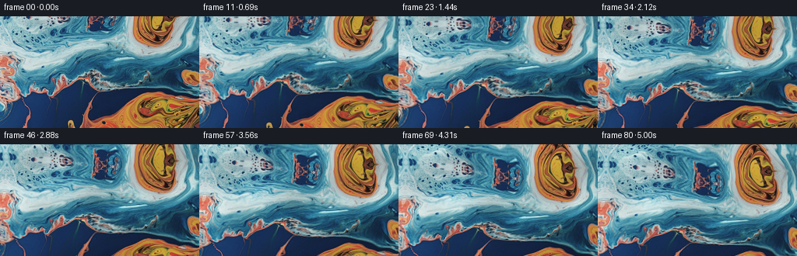
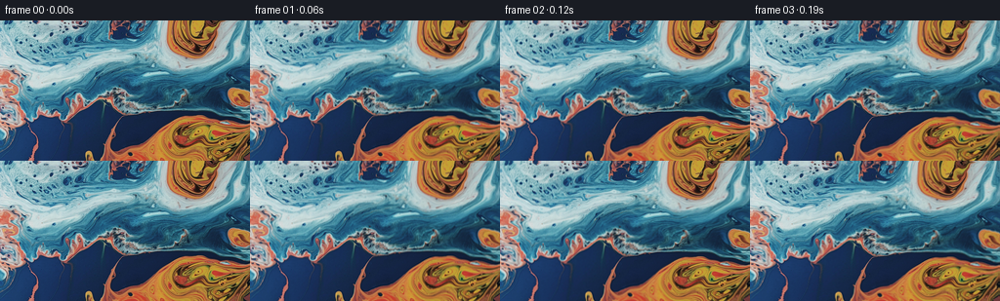

候选 01 · 2026-11-09T02:22:42.875990+00:00 · 点开播放与检查图
inspection.png

transition_check.png

代码变化
--- 上一保存版本
+++ 本次保存版本
@@ -0,0 +1,141 @@
+"""Deterministic image-based macro-liquid animation.
+
+The supplied photograph is the sole color/texture source. Smooth incompressible
+currents transport its reflected colors; small surface-normal waves animate the
+specular light. A real pinhole pitch transform provides the upward camera tilt.
+"""
+from pathlib import Path
+import numpy as np
+from PIL import Image
+import artifact_io
+
+ROOT = Path(__file__).resolve().parent
+
+
+def reflect(v, n):
+ v = np.mod(v, 2.0 * (n - 1))
+ return np.where(v > n - 1, 2.0 * (n - 1) - v, v)
+
+
+def cubic_weights(f):
+ f2, f3 = f*f, f*f*f
+ return (-.5*f + f2 - .5*f3,
+ 1 - 2.5*f2 + 1.5*f3,
+ .5*f + 2*f2 - 1.5*f3,
+ -.5*f2 + .5*f3)
+
+
+def sample(image, x, y):
+ # Continue the close-up beyond its upper edge using the original liquid,
+ # changing the continuation's local shear so it is not a repeated tile.
+ above = np.maximum(-y, 0)
+ mix = 1.0 - np.exp(-above / 24.0)
+ xx = x + mix * (10.0*np.sin(x/43.0 + .4) - 5.0) - .14*above
+ yy = np.where(y < 0, above * (.84 + .13*np.sin(x/37.0)) +
+ 2.0*mix*np.sin(x/22.0), y)
+ h, w, _ = image.shape
+ xx, yy = reflect(xx, w), reflect(yy, h)
+ ix, iy = np.floor(xx).astype(np.int32), np.floor(yy).astype(np.int32)
+ wx, wy = cubic_weights(xx-ix), cubic_weights(yy-iy)
+ out = np.zeros(x.shape + (3,), np.float32)
+ for j in range(4):
+ jj = reflect(iy + j - 1, h).astype(np.int32)
+ for i in range(4):
+ ii = reflect(ix + i - 1, w).astype(np.int32)
+ out += image[jj, ii] * (wx[i]*wy[j])[..., None]
+ return out
+
+
+def velocity(x, y, time):
+ # A stream-function field, hence very little artificial dilation of the
+ # orange and blue pools. Vortices carry, curl and stretch their boundaries.
+ vx = 1.15*np.sin(y/27.0 + .25*time)
+ vy = .65*np.sin(x/37.0 - .18*time)
+ phase = x/49.0 + y/38.0 - .32*time
+ vx += .8*np.cos(phase)
+ vy -= .8*(38.0/49.0)*np.cos(phase)
+ for cx, cy, radius, angular in (
+ (109., 52., 105., .031),
+ (190., 13., 49., -.083),
+ (184., 122., 65., .041),
+ (39., 77., 46., -.045),
+ ):
+ dx, dy = x-cx, y-cy
+ k = angular*np.exp(-(dx*dx+dy*dy)/(2*radius*radius))
+ vx -= k*dy
+ vy += k*dx
+ return vx, vy
+
+
+def make_frames(first):
+ h, w = first.shape[:2]
+ y, x = np.mgrid[:h, :w].astype(np.float32)
+ image = first.astype(np.float32)
+ frames = np.empty((81, h, w, 3), np.uint8)
+ frames[0] = first
+ focal = 225.0
+ cx, cy = (w-1)/2., (h-1)/2.
+ u, v = (x-cx)/focal, (y-cy)/focal
+ for index in range(1, 81):
+ time = index/16.0
+ p = index/80.0
+ # Pitch proceeds calmly, easing into a continuous upward survey.
+ progress = .82*p + .18*(p*p*(3.0-2.0*p))
+ pitch = .151*progress
+ cp, sp = np.cos(pitch), np.sin(pitch)
+ denominator = cp + v*sp
+ world_x = cx + focal*u/denominator
+ world_y = cy + focal*(v*cp-sp)/denominator
+ # A very slight handheld-free sideways glide as the lens pitches.
+ world_x += .9*np.sin(.38*time)
+ qx, qy = world_x.copy(), world_y.copy()
+ steps = max(2, int(np.ceil(time/.30)))
+ dt = time/steps
+ for s in range(steps):
+ now = time-s*dt
+ vx, vy = velocity(qx, qy, now)
+ mx, my = qx-.5*dt*vx, qy-.5*dt*vy
+ vx, vy = velocity(mx, my, now-.5*dt)
+ qx -= dt*vx
+ qy -= dt*vy
+ # Capillary ripples are small relative to the rolling liquid currents.
+ a = .068*qx + .042*qy
+ b = -.105*qx + .122*qy
+ c = .026*qx + .087*qy
+ ripple_x = 1.30*(np.sin(a-1.02*time)-np.sin(a)) + \
+ .48*(np.cos(b+.81*time)-np.cos(b))
+ ripple_y = 1.02*(np.sin(c-.88*time)-np.sin(c)) + \
+ .43*(np.sin(b+.81*time)-np.sin(b))
+ qx += ripple_x
+ qy += ripple_y
+ rgb = sample(image, qx, qy)
+ # Subtle changing reflection intensity rather than unrelated new color.
+ # The subtraction makes the lighting match the supplied first frame.
+ light_a = .035*world_x + .074*world_y
+ light_b = .081*world_x - .035*world_y
+ shine = .027*(np.sin(light_a-.93*time)-np.sin(light_a)) + \
+ .017*(np.sin(light_b+.70*time)-np.sin(light_b))
+ luma = rgb[..., 0]*.2126 + rgb[..., 1]*.7152 + rgb[..., 2]*.0722
+ sheen_mask = np.clip((luma-40)/145.0, 0, 1)
+ rgb *= (1 + shine*(.55+.45*sheen_mask))[..., None]
+ rgb += (shine*sheen_mask)[..., None] * np.array([13., 18., 20.], np.float32)
+ frames[index] = np.clip(np.rint(rgb), 0, 255).astype(np.uint8)
+ return frames
+
+
+def main():
+ first = np.asarray(Image.open(ROOT/'first_frame.png').convert('RGB'))
+ frames = make_frames(first)
+ assert frames.shape == (81, 144, 256, 3)
+ assert np.array_equal(frames[0], first)
+ # Preserve the intermediate RGB candidate as well as the submission.
+ np.save(ROOT/'.tmp'/'candidate_rgb.npy', frames)
+ artifact_io.save(frames, ROOT)
+ difference = np.abs(np.diff(frames.astype(np.float32), axis=0))
+ print('Generated:', frames.shape, frames.dtype)
+ print('First frame identical:', np.array_equal(frames[0], first))
+ print('Mean adjacent-frame RGB changes:', np.round(difference.mean((1,2,3))[[0,19,39,59,79]], 3))
+
+
+if __name__ == '__main__':
+ main()
命令 2 · 2026-11-09T02:21:05.570533+00:00/bin/bash -lc "cat task_spec.json && cat artifact_io.py && python - <<'PY'
from PIL import Image
import numpy as np
im=np.array(Image.open('first_frame.png').convert('RGB'))
print('shape',im.shape,'min/max',im.min((0,1)),im.max((0,1)))
print('means',im.mean((0,1)))
# low resolution color name grid
a=np.array(Image.fromarray(im).resize((64,36)))
for row in a:
s=''
for r,g,b in row.astype(float):
mx=max(r,g,b);mn=min(r,g,b)
if mx<25: c=' '
elif mx<55: c='.'
elif r>1.2*b and r>1.08*g: c='O' if r>135 else 'o'
elif b>1.17*r and b>1.05*g: c='B' if b>140 else 'b'
elif g>1.25*r and b>1.2*r: c='C'
elif mn>185:c='W'
elif mn>100 and mx-mn<60:c='w'
elif r>1.15*b:c='y'
else:c='-'
s+=c
print(s)
print('grid RGB:')
a=np.array(Image.fromarray(im).resize((16,9)))
for row in a:print(' '.join('%02x%02x%02x'%tuple(v) for v in row))
PY"exit 0 命令 3 · 2026-11-09T02:22:38.373601+00:00/bin/bash -lc "cat > generate.py <<'PY'
\"\"\"Deterministic image-based macro-liquid animation.
The supplied photograph is the sole color/texture source. Smooth incompressible
currents transport its reflected colors; small surface-normal waves animate the
specular light. A real pinhole pitch transform provides the upward camera tilt.
\"\"\"
from pathlib import Path
import numpy as np
from PIL import Image
import artifact_io
ROOT = Path(__file__).resolve().parent
def reflect(v, n):
v = np.mod(v, 2.0 * (n - 1))
return np.where(v > n - 1, 2.0 * (n - 1) - v, v)
def cubic_weights(f):
f2, f3 = f*f, f*f*f
return (-.5*f + f2 - .5*f3,
1 - 2.5*f2 + 1.5*f3,
.5*f + 2*f2 - 1.5*f3,
-.5*f2 + .5*f3)
def sample(image, x, y):
# Continue the close-up beyond its upper edge using the original liquid,
# changing the continuation's local shear so it is not a repeated tile.
above = np.maximum(-y, 0)
mix = 1.0 - np.exp(-above / 24.0)
xx = x + mix * (10.0*np.sin(x/43.0 + .4) - 5.0) - .14*above
yy = np.where(y < 0, above * (.84 + .13*np.sin(x/37.0)) +
2.0*mix*np.sin(x/22.0), y)
h, w, _ = image.shape
xx, yy = reflect(xx, w), reflect(yy, h)
ix, iy = np.floor(xx).astype(np.int32), np.floor(yy).astype(np.int32)
wx, wy = cubic_weights(xx-ix), cubic_weights(yy-iy)
out = np.zeros(x.shape + (3,), np.float32)
for j in range(4):
jj = reflect(iy + j - 1, h).astype(np.int32)
for i in range(4):
ii = reflect(ix + i - 1, w).astype(np.int32)
out += image[jj, ii] * (wx[i]*wy[j])[..., None]
return out
def velocity(x, y, time):
# A stream-function field, hence very little artificial dilation of the
# orange and blue pools. Vortices carry, curl and stretch their boundaries.
vx = 1.15*np.sin(y/27.0 + .25*time)
vy = .65*np.sin(x/37.0 - .18*time)
phase = x/49.0 + y/38.0 - .32*time
vx += .8*np.cos(phase)
vy -= .8*(38.0/49.0)*np.cos(phase)
for cx, cy, radius, angular in (
(109., 52., 105., .031),
(190., 13., 49., -.083),
(184., 122., 65., .041),
(39., 77., 46., -.045),
):
dx, dy = x-cx, y-cy
k = angular*np.exp(-(dx*dx+dy*dy)/(2*radius*radius))
vx -= k*dy
vy += k*dx
return vx, vy
def make_frames(first):
h, w = first.shape[:2]
y, x = np.mgrid[:h, :w].astype(np.float32)
image = first.astype(np.float32)
frames = np.empty((81, h, w, 3), np.uint8)
frames[0] = first
focal = 225.0
cx, cy = (w-1)/2., (h-1)/2.
u, v = (x-cx)/focal, (y-cy)/focal
for index in range(1, 81):
time = index/16.0
p = index/80.0
# Pitch proceeds calmly, easing into a continuous upward survey.
progress = .82*p + .18*(p*p*(3.0-2.0*p))
pitch = .151*progress
cp, sp = np.cos(pitch), np.sin(pitch)
denominator = cp + v*sp
world_x = cx + focal*u/denominator
world_y = cy + focal*(v*cp-sp)/denominator
# A very slight handheld-free sideways glide as the lens pitches.
world_x += .9*np.sin(.38*time)
qx, qy = world_x.copy(), world_y.copy()
steps = max(2, int(np.ceil(time/.30)))
dt = time/steps
for s in range(steps):
now = time-s*dt
vx, vy = velocity(qx, qy, now)
mx, my = qx-.5*dt*vx, qy-.5*dt*vy
vx, vy = velocity(mx, my, now-.5*dt)
qx -= dt*vx
qy -= dt*vy
# Capillary ripples are small relative to the rolling liquid currents.
a = .068*qx + .042*qy
b = -.105*qx + .122*qy
c = .026*qx + .087*qy
ripple_x = 1.30*(np.sin(a-1.02*time)-np.sin(a)) + \\
.48*(np.cos(b+.81*time)-np.cos(b))
ripple_y = 1.02*(np.sin(c-.88*time)-np.sin(c)) + \\
.43*(np.sin(b+.81*time)-np.sin(b))
qx += ripple_x
qy += ripple_y
rgb = sample(image, qx, qy)
# Subtle changing reflection intensity rather than unrelated new color.
# The subtraction makes the lighting match the supplied first frame.
light_a = .035*world_x + .074*world_y
light_b = .081*world_x - .035*world_y
shine = .027*(np.sin(light_a-.93*time)-np.sin(light_a)) + \\
.017*(np.sin(light_b+.70*time)-np.sin(light_b))
luma = rgb[..., 0]*.2126 + rgb[..., 1]*.7152 + rgb[..., 2]*.0722
sheen_mask = np.clip((luma-40)/145.0, 0, 1)
rgb *= (1 + shine*(.55+.45*sheen_mask))[..., None]
rgb += (shine*sheen_mask)[..., None] * np.array([13., 18., 20.], np.float32)
frames[index] = np.clip(np.rint(rgb), 0, 255).astype(np.uint8)
return frames
def main():
first = np.asarray(Image.open(ROOT/'first_frame.png').convert('RGB'))
frames = make_frames(first)
assert frames.shape == (81, 144, 256, 3)
assert np.array_equal(frames[0], first)
# Preserve the intermediate RGB candidate as well as the submission.
np.save(ROOT/'.tmp'/'candidate_rgb.npy', frames)
artifact_io.save(frames, ROOT)
difference = np.abs(np.diff(frames.astype(np.float32), axis=0))
print('Generated:', frames.shape, frames.dtype)
print('First frame identical:', np.array_equal(frames[0], first))
print('Mean adjacent-frame RGB changes:', np.round(difference.mean((1,2,3))[[0,19,39,59,79]], 3))
if __name__ == '__main__':
main()
PY
OPENBLAS_NUM_THREADS=1 python generate.py"exit 0 命令 4 · 2026-11-09T02:22:58.780789+00:00/bin/bash -lc "python - <<'PY'
import numpy as np
from PIL import Image
f=np.load('.tmp/candidate_rgb.npy')
print('range',int(f.min()),int(f.max()), 'shape',f.shape)
for k in [0,20,40,60,80]:
a=np.asarray(Image.fromarray(f[k]).resize((48,27))).astype(float)
print('\\nFRAME',k)
for row in a:
s=''
for r,g,b in row:
mx=max(r,g,b); mn=min(r,g,b)
if mx<25:c=' '
elif mx<55:c='.'
elif r>1.2*b and r>1.08*g:c='O' if r>135 else 'o'
elif b>1.17*r and b>1.05*g:c='B' if b>140 else 'b'
elif g>1.25*r and b>1.2*r:c='C'
elif mn>185:c='W'
elif mn>100 and mx-mn<60:c='w'
elif r>1.15*b:c='y'
else:c='-'
s+=c
print(s)
print('last vs first MAD',np.mean(np.abs(f[-1].astype(float)-f[0])))
print('per-frame maximum mean change',np.max(np.abs(np.diff(f.astype(float),axis=0)).mean((1,2,3))))
PY
command -v ffmpeg || true
ls -lh pixels.npz index.html .tmp/candidate_rgb.npy"exit 0